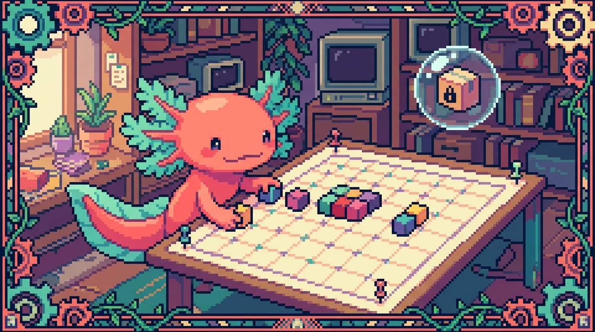

Capítulo 08 — Posicionamiento

Hasta ahora, tus elementos se han colocado solos: uno debajo del otro, uno al lado del otro, siguiendo el orden natural del HTML. Eso está muy bien para el 90% de los casos. Pero llega un momento en que necesitas que algo se quede pegado arriba mientras haces scroll, o que un pequeño globo de notificación se monte encima de un botón, o que una insignia "Nuevo" flote en la esquina de una tarjeta. Para eso existe el posicionamiento. Bit, nuestro ajolote, dice que el posicionamiento es como decirle a un elemento: "tú no sigas la fila, ponte exactamente aquí". Usado con cabeza, es magia. Usado a lo loco, es un desastre. En este capítulo aprenderás a usarlo con cabeza.
1. La idea grande: ¿qué es "posicionar"?
Por defecto, el navegador acomoda cada elemento en lo que se llama el flujo normal del documento: de arriba hacia abajo, respetando si son de bloque o de línea (lo viste en capítulos anteriores). Posicionar significa cambiar ese comportamiento para un elemento concreto.
La herramienta central es la propiedad position. Acepta cinco valores que vamos a recorrer uno por uno: static, relative, absolute, fixed y sticky. Junto a ella trabajan otras cuatro propiedades de desplazamiento (top, right, bottom, left), un sistema de capas (z-index) y dos técnicas más antiguas que conviene reconocer (float y overflow).
🟦 ¿Qué significa? — Flujo normal del documento
Es el orden automático con el que el navegador coloca los elementos cuando no le dices nada especial: los bloques se apilan verticalmente y el contenido en línea fluye como texto. Sirve para que una página tenga estructura sin esfuerzo. Dónde se usa en un repo real: en
tunal-digital, casi todo elstyles.cssconfía en el flujo normal; solo unos pocos elementos (como un botón flotante o una barra superior) rompen ese flujo a propósito.💡 Tip
Antes de tocar
position, pregúntate si Flexbox o Grid (capítulos siguientes o anteriores según tu ruta) no resuelven mejor el problema. El posicionamiento es para casos puntuales de "ponte exactamente aquí", no para construir layouts completos.
2. position: static — el valor por defecto
Todos los elementos empiezan con position: static. Significa "compórtate normal, sigue el flujo". Es tan normal que casi nunca lo escribes tú; ya está puesto de fábrica.
.tarjeta {
position: static; /* esto es lo que ya tenían sin escribirlo */
}
🟦 ¿Qué significa? — static
Es la posición normal de un elemento: ocupa su lugar en la fila y no reacciona a
top,right,bottomnileft. Sirve como punto de partida y como forma de "resetear" un posicionamiento que ya no quieres. Dónde se usa: la inmensa mayoría de los párrafos, títulos e imágenes detunal-digitalsonstaticsin que nadie lo escriba.
El dato clave: en static, las propiedades top/right/bottom/left no hacen nada. Si las escribes, el navegador las ignora. Esto confunde a muchos principiantes: "le puse top: 20px y no se movió". Casi siempre es porque el elemento sigue siendo static.
3. Las cuatro propiedades de desplazamiento: top, right, bottom, left
Antes de seguir con los otros valores de position, necesitas entender estas cuatro, porque son las que mueven el elemento una vez que dejó de ser static.
🟦 ¿Qué significa? — top / right / bottom / left
Son cuatro propiedades que indican a qué distancia se separa un elemento posicionado de un borde de referencia.
top: 10pxsignifica "10 píxeles desde arriba";left: 0significa "pegado a la izquierda". Sirven para colocar con precisión un elemento que ya no está en el flujo normal. Dónde se usa: para clavar una insignia "Nuevo" en la esquina superior derecha de una tarjeta de proyecto enFaro.
La referencia de "desde dónde se mide" depende del valor de position, y eso es justo lo que veremos en las siguientes secciones. Un detalle importante: estas propiedades solo funcionan si position es relative, absolute, fixed o sticky. Con static, mudas.
4. position: relative — muévete respecto a ti mismo
Con relative, el elemento sigue ocupando su lugar en el flujo (su hueco no desaparece), pero puedes empujarlo desde su propia posición original usando top/right/bottom/left.
.boton-destacado {
position: relative;
top: -4px; /* sube 4px respecto a donde estaba */
left: 8px; /* se corre 8px a la derecha */
}
🟦 ¿Qué significa? — relative
Posiciona el elemento en relación a sí mismo: parte de donde el flujo lo puso y se desplaza desde ahí. El hueco que ocupaba se queda reservado. Sirve para ajustes finos de posición y, sobre todo, para crear un "marco de referencia" para hijos absolutos (lo verás en la sección 5). Dónde se usa: en
tunal-digital, una tarjeta conposition: relativepara que dentro pueda flotar una etiqueta de precio absoluta.
El superpoder de relative no es tanto moverse a sí mismo (eso se usa poco), sino que convierte al elemento en el punto de referencia de sus hijos absolute. Guarda esta idea, la usaremos enseguida.
🔎 En tu código
En
RachaSimple(React + Tailwind),position: relativese escribe simplemente como la claserelative, ytop: 0; right: 0se vuelventop-0 right-0. Mismos conceptos, nombres más cortos. Lo que aprendas aquí en CSS puro se traduce directo a Tailwind.
5. position: absolute — sácame del flujo y colócame
Aquí empieza lo interesante. Con absolute, el elemento sale del flujo normal: deja de ocupar su hueco (los demás se cierran como si no existiera) y se coloca respecto a su ancestro posicionado más cercano.
.tarjeta {
position: relative; /* este es el ancestro de referencia */
}
.tarjeta .insignia-nuevo {
position: absolute;
top: 8px;
right: 8px; /* esquina superior derecha de la tarjeta */
background: #e63946;
color: white;
padding: 2px 8px;
border-radius: 999px;
}
🟦 ¿Qué significa? — absolute
Saca al elemento del flujo normal y lo posiciona respecto al ancestro más cercano que tenga
positiondistinta destatic(es decir,relative,absolute,fixedosticky). Si no encuentra ninguno, usa la página entera. Sirve para superponer elementos: insignias, globos, menús desplegables, iconos en esquinas. Dónde se usa: la insignia "Nuevo" sobre una tarjeta de proyecto enFaro, o un icono de candado sobre una miniatura entunal-digital.⚠️ Cuidado
El error número uno con
absolute: olvidar ponerposition: relativeen el contenedor padre. Si lo olvidas, tu insignia no se coloca respecto a la tarjeta, sino respecto a toda la página, y aparece en una esquina rarísima. Regla mental: padrerelative, hijoabsolute.🟦 ¿Qué significa? — Ancestro posicionado (bloque contenedor)
Es el elemento de referencia que un hijo
absoluteusa para medir sutop/left/etc.. Es el ancestro más cercano conpositiondistinta destatic. Sirve para controlar exactamente "respecto a qué" se coloca un elemento absoluto. Dónde se usa: enFaro, la tarjeta de proyecto esrelativejustamente para ser el ancestro de su insignia de estado.
Un detalle: cuando pones un elemento absolute, si no le das ni top/bottom ni left/right, se queda más o menos donde estaba pero ya fuera del flujo. Lo normal es darle al menos dos coordenadas (una vertical y una horizontal) para clavarlo donde quieres.
6. position: fixed — quédate pegado a la pantalla
Con fixed, el elemento también sale del flujo, pero su referencia no es un ancestro: es la ventana del navegador (el viewport). Resultado: se queda quieto en la pantalla aunque hagas scroll.
.boton-subir {
position: fixed;
bottom: 24px;
right: 24px; /* siempre visible en la esquina inferior derecha */
width: 48px;
height: 48px;
border-radius: 50%;
}
🟦 ¿Qué significa? — fixed
Posiciona el elemento respecto a la ventana visible del navegador y lo mantiene fijo aunque el usuario haga scroll. Sirve para botones flotantes "volver arriba", barras de cookies, chats de ayuda en la esquina. Dónde se usa: un botón flotante de WhatsApp en la esquina de
tunal-digitalque acompaña al usuario por toda la página.🟦 ¿Qué significa? — Viewport
Es el área visible de la página dentro de la ventana del navegador, sin contar lo que queda fuera por scroll. Sirve como marco de referencia para
fixedy como unidad de medida (vh,vw). Dónde se usa: el botón flotante detunal-digitalse mide respecto al viewport, por eso no se mueve al hacer scroll.⚠️ Cuidado
Un elemento
fixedpuede tapar contenido importante en pantallas pequeñas. Si pones una barra fija arriba, recuerda dejar espacio (por ejemplo, unpadding-topen el body) para que el primer título no quede oculto debajo.
7. position: sticky — lo mejor de dos mundos
sticky es el valor más nuevo y, para muchos, el más útil. El elemento se comporta como relative (ocupa su hueco, fluye normal) hasta que llega a cierto punto del scroll; ahí se "pega" como si fuera fixed, y se queda fijo mientras su contenedor siga visible.
.barra-manual {
position: sticky;
top: 0; /* se pega al borde superior al hacer scroll */
background: var(--color-fondo);
z-index: 10;
}
🟦 ¿Qué significa? — sticky
Mezcla
relativeyfixed: el elemento fluye normal hasta alcanzar un umbral (top,bottom, etc.) y entonces se queda pegado en pantalla mientras su contenedor esté visible. Sirve para barras de navegación que acompañan al lector, encabezados de tabla que no se pierden, índices laterales. Dónde se usa: ¡la propia barra superior de este manual! Ensite/estilos.css, la barra usaposition: stickycontop: 0para quedarse arriba mientras lees.💡 Tip
stickynecesita que le des un umbral, normalmentetop: 0. Si ponesposition: stickypero olvidastop, no se pega a nada y parece que no funciona. Es la causa más común de "mi sticky está roto".⚠️ Cuidado
stickydeja de pegarse cuando su contenedor padre termina y se sale de la pantalla. Si tu barra "sticky" no se queda fija todo lo que esperas, revisa que su contenedor sea suficientemente alto (a menudo el culpable es un padre conoverflow: hiddeno una altura pequeña).
| Valor | ¿Sale del flujo? | Referencia | Caso típico |
|---|---|---|---|
static |
No | — | Todo por defecto |
relative |
No | Su propia posición | Empujones finos / ser padre de absolutos |
absolute |
Sí | Ancestro posicionado | Insignia en esquina de tarjeta |
fixed |
Sí | Viewport | Botón flotante "volver arriba" |
sticky |
No (luego sí) | Scroll del contenedor | Barra superior del manual |
8. z-index y el apilamiento: ¿quién va encima?
Cuando varios elementos se superponen, ¿cuál se ve por encima? Para controlarlo existe z-index. Piensa en un eje invisible que sale de la pantalla hacia ti: mayor número, más cerca de tus ojos.
.barra-manual {
position: sticky;
top: 0;
z-index: 100; /* por encima del contenido normal */
}
.menu-desplegable {
position: absolute;
z-index: 200; /* por encima incluso de la barra */
}
🟦 ¿Qué significa? — z-index
Es un número que decide el orden de apilamiento (qué elemento se dibuja encima de cuál) cuando se superponen. Mayor
z-index, más al frente. Sirve para que menús, modales y barras no queden tapados por el contenido. Dónde se usa: enFaro, un menú desplegable de opciones necesita unz-indexalto para no quedar oculto bajo las tarjetas de proyecto.🟦 ¿Qué significa? — Contexto de apilamiento
Es un "grupo de capas" independiente. Un elemento posicionado con
z-indexcrea su propio contexto, y dentro de él sus hijos se apilan entre sí, sin importar números de fuera. Sirve para entender por qué a veces unz-index: 9999no funciona (está atrapado dentro de un contexto que en su conjunto va por debajo). Dónde se usa: explica esos misterios de "le puse z-index altísimo y sigue abajo" en cualquiera de tus proyectos.⚠️ Cuidado
z-indexsolo funciona en elementos posicionados (nostatic). Si ponesz-index: 50en un elemento sinposition, no pasa nada. Primeroposition: relative(o el que toque), luegoz-index.💡 Tip
No uses números gigantes como
z-index: 99999. Cuando todo el equipo hace eso, nadie gana y se vuelve un caos. Usa una escala sencilla y consistente: contenido0, barra100, menús200, modales1000. EnFarooRachaSimpleesto mantiene el orden bajo control.🔎 En tu código
Tailwind (en
RachaSimpleyFaro) ofrece clases comoz-10,z-20,z-50. Son exactamentez-index: 10,20,50. Ysticky top-0 z-50es el equivalente directo de nuestra barra del manual.
9. overflow — qué pasa cuando el contenido no cabe
overflow no es de posicionamiento estricto, pero va de la mano: controla qué ocurre cuando el contenido de un elemento es más grande que su caja.
.lista-scroll {
height: 200px;
overflow-y: auto; /* si la lista crece, aparece scroll dentro */
}
.recorte {
overflow: hidden; /* lo que se salga, se oculta */
}
🟦 ¿Qué significa? — overflow
Decide qué hacer con el contenido que se desborda de su caja:
visible(se ve y se sale, por defecto),hidden(se recorta),scroll(siempre muestra barras) oauto(muestra barras solo si hace falta). Sirve para crear áreas con scroll propio, recortar imágenes a una forma o esconder desbordes. Dónde se usa: enFaro, una lista de roadmap larga dentro de una tarjeta usaoverflow-y: autopara tener su propio scroll sin estirar la tarjeta.💡 Tip
overflow: hiddenes el truco clásico para que una imagen rectangular se recorte dentro de un contenedor redondeado (border-radius). Sin él, las esquinas de la imagen asoman fuera del círculo.⚠️ Cuidado
Si tu barra
sticky"deja de pegarse", revisa si algún ancestro tieneoverflow: hidden(oauto/scroll). Ese ajuste cambia el contenedor de scroll y suele romper elsticky. Es uno de los bugs más confusos para principiantes; ahora ya lo conoces.
10. float y clear — el legado que conviene reconocer
Antes de que existieran Flexbox y Grid, los layouts de varias columnas se hacían con float. Hoy no lo usamos para layout, pero todavía te lo encontrarás en código antiguo, así que vale la pena reconocerlo.
.imagen-articulo {
float: left; /* el texto fluye a su alrededor */
margin: 0 16px 8px 0;
}
.fin-de-seccion {
clear: both; /* fuerza a empezar debajo de los floats */
}
🟦 ¿Qué significa? — float
Saca parcialmente un elemento del flujo y lo empuja a la izquierda o derecha, dejando que el contenido siguiente lo rodee. Sirve hoy casi solo para su uso original: que un texto envuelva una imagen. Dónde se usa: si retomas un sitio viejo o una plantilla heredada antes de
tunal-digital, podrías verfloatarmando columnas; lo reconoces y, si puedes, lo migras a Flexbox/Grid.🟦 ¿Qué significa? — clear
Indica que un elemento no debe colocarse junto a elementos flotantes anteriores, sino debajo de ellos.
clear: bothlos evita por ambos lados. Sirve para "cerrar" una zona con floats y que lo siguiente baje correctamente. Dónde se usa: acompaña siempre afloaten código antiguo; sin él, los diseños flotados se descuadran.💡 Tip
Regla práctica para hoy: usa
floatsolo para envolver texto alrededor de una imagen. Para columnas y rejillas, Flexbox o Grid. Si vesfloathaciendo layout, es código viejo, no un modelo a imitar.
11. ¿Cuándo uso cada uno? Guía rápida de decisión
Bit te resume el árbol de decisión que usan los desarrolladores con experiencia:
- ¿Solo quiero acomodar cosas en filas/columnas? → No uses
position. Usa Flexbox o Grid. - ¿Quiero clavar algo en la esquina de un contenedor (insignia, icono)? → Padre
relative, hijoabsolute. - ¿Quiero un botón que me siga por toda la pantalla? →
fixed. - ¿Quiero una barra que se pegue arriba al hacer scroll? →
stickycontop: 0(como la barra de este manual). - ¿Quiero empujar un elemento unos pocos píxeles? →
relativecontop/left. - ¿Quiero que un área tenga su propio scroll o recortar contenido? →
overflow. - ¿Necesito que algo se vea por encima de otra cosa? →
position+z-index.
🔎 En tu código
La barra superior de tu manual (
site/estilos.css) combina varias cosas de este capítulo a la vez:position: sticky,top: 0, unz-indexpara ir por encima del texto, y variables CSS para el color de fondo según el tema. Es un ejemplo real y pequeño de todo junto.
✅ Checklist — ¿ya domino esto?
- [ ] Entiendo qué es el flujo normal y qué significa "salir" de él.
- [ ] Sé que
top/right/bottom/leftno hacen nada conposition: static. - [ ] Distingo
relative(no sale del flujo) deabsolute(sí sale). - [ ] Recuerdo la regla "padre
relative, hijoabsolute". - [ ] Sé qué hace
fixedy cuál es su referencia (el viewport). - [ ] Entiendo
stickyy por qué necesita un umbral comotop: 0. - [ ] Sé que
z-indexsolo funciona en elementos posicionados. - [ ] Conozco los cuatro valores de
overflowy para qué sirve cada uno. - [ ] Reconozco
float/clearcomo legado y sé cuándo (no) usarlos. - [ ] Sé elegir la herramienta correcta según el problema.
🧪 Ejercicios
-
(En papel o mental) Para cada caso, di qué
positionusarías: (a) un sello "Agotado" en la esquina de una foto de producto; (b) un botón de ayuda siempre visible abajo a la derecha; (c) una barra de navegación que se pega arriba al hacer scroll; (d) mover un icono 3px hacia arriba para alinearlo con un texto. -
💻 En el
styles.cssdetunal-digital, crea una tarjeta conposition: relativey dentro una insignia conposition: absolute; top: 8px; right: 8px;. Comprueba que la insignia se clava en la esquina de la tarjeta. Luego quita elrelativedel padre y observa adónde salta la insignia. -
💻 Añade a tu página un botón "volver arriba" con
position: fixed; bottom: 24px; right: 24px;. Haz que la página sea larga (mucho texto) y verifica que el botón no se mueve al hacer scroll. -
💻 Crea una barra superior con
position: sticky; top: 0;y dale unz-index: 100. Llena la página de contenido y comprueba que la barra se queda pegada arriba. Después, quítale eltop: 0y observa que deja de pegarse: esa es la lección clave desticky. -
💻 Haz un contenedor de
height: 150pxcon una lista larga dentro y aplícaleoverflow-y: auto. Verifica que aparece un scroll interno sin que crezca el contenedor. Cámbialo aoverflow: hiddeny observa cómo el contenido sobrante desaparece. -
💻 Crea dos elementos superpuestos (ambos
position: absoluteen el mismo sitio) con colores distintos. Usaz-indexpara decidir cuál va encima, e intercámbialos cambiando solo los números. Bonus: ponz-indexsinpositiony confirma que no hace nada.
Lo lograste. El posicionamiento asusta al principio porque rompe el orden cómodo del flujo normal, pero como viste, cada valor tiene un trabajo muy concreto. Bit te deja un recordatorio: el mejor posicionamiento es el que casi no usas. Apóyate en Flexbox y Grid para los layouts, y reserva
positionpara esos detalles que de verdad lo necesitan: la insignia, el botón flotante y, cómo no, la barrastickyque te acompaña arriba mientras lees este mismo manual. Nos vemos en el siguiente capítulo.